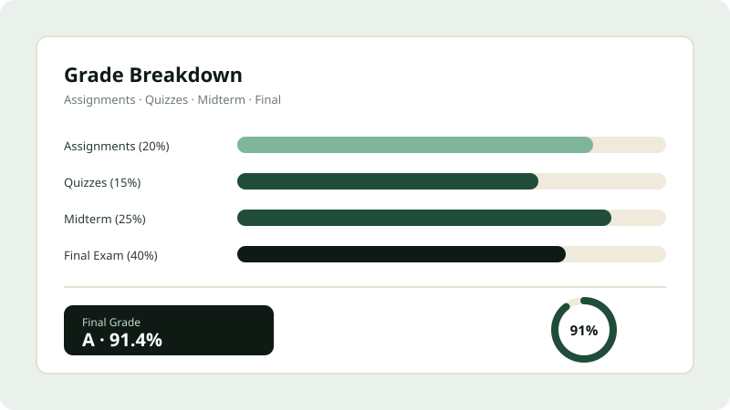

Grade Calculator
Calculate your assignment grades, weighted grades, quiz scores, test results, and semester GPA instantly. Enter your marks, apply weights, and see your estimated academic performance in seconds.
Select a target grade below to see if your current marks can get you there, and what average you need.
| Marks Range | Letter Grade | 4.0 Scale | 5.0 Scale | 10.0 Scale | Meaning |
|---|---|---|---|---|---|
| 90–100 | A+ | 4.00 | 5.00 | 10.00 (O) | Outstanding |
| 80–89 | A+ | 4.00 | 5.00 | 9.00 (A+) | Excellent |
| 75–79 | A | 3.75 | 4.50 | 8.00 (A) | Very Good |
| 70–74 | A− | 3.50 | 4.00 | 8.00 (A) | Good |
| 65–69 | B+ | 3.25 | 3.50 | 7.00 (B+) | Above Average |
| 60–64 | B | 3.00 | 3.00 | 7.00 (B+) | Average |
| 55–59 | B− | 2.75 | 2.50 | 6.00 (B) | Satisfactory |
| 50–54 | C+ | 2.50 | 2.00 | 5.00 (C) | Below Average |
| 45–49 | C | 2.25 | 1.00 | 4.00 (P) | Weak Pass |
| 40–44 | D | 2.00 | 0.00 | 0.00 | Pass (Minimum) |
| 0–39 | F | 0.00 | 0.00 | 0.00 | Fail |
What Is a Grade Calculator?
A Grade Calculator is an online academic tool that estimates your current or final grade using the scores you enter. It combines assignment marks, quizzes, exams, projects, and other assessments to calculate your overall academic performance. Many calculators also support weighted grades, percentage grades, and letter grades depending on your grading system.
Keeping track of your grades should be simple. Many students struggle when different assignments carry different weights. Others find it difficult to calculate grades after quizzes, tests, projects, or final exams. Instead of spending time solving formulas by hand, you can enter your scores and let the calculator estimate the result instantly.
How to Use This Grade Calculator
Choose Your Grading Scale
Select the scale your institution uses: 4.0, 5.0, or 10.0, using the tabs at the top of the subject table. The grade points and letter grades will update automatically.
Enter Subject Marks & Credits
Type each subject name, your marks out of 100, and the credit hours. The letter grade column fills in instantly as you type. Add more subjects with the "Add Subject" button.
Check Your Live Summary
The result panel at the top updates in real time showing your GPA, percentage average, pass/fail status, and total subject count.
Run the Prediction Engine
Want to know what average you need for a target grade? Select a grade in the Prediction Engine section and click Predict for a personalised recommendation based on your current marks.
What Does This Grade Calculator Do?
This calculator helps you estimate different types of academic grades from one place. Depending on your course requirements, you can calculate assignment grades, homework grades, quiz grades, test grades, midterm grades, final exam grades, course grades, semester grades, overall grades, weighted grades, percentage grades, and letter grades.
Instead of performing several manual calculations, you can organise your scores and calculate them much faster. The calculator also helps you understand how each assessment affects your overall academic performance.
Real-Time Results
Every keystroke updates the GPA and percentage instantly: no button to press, no page reload needed.
Credit-Weighted GPA
Credits are factored in automatically, giving you the same GPA calculation your institution uses.
Prediction Engine
Find out exactly what average you need to hit A, B+, or any target grade before your exams.
Who Can Use This Grade Calculator?
This calculator is designed for anyone who wants to estimate academic performance quickly throughout the academic year, regardless of education level. Students commonly use it before exams, after receiving assignment scores, or while planning target grades.
It is suitable for middle school students, high school students, college students, university students, online learners, teachers, tutors, and parents helping students monitor academic progress. Because different institutions use different grading systems, this calculator provides a convenient way to estimate grades before official results become available.
Common Types of Academic Grades
Educational institutions use several types of grades to evaluate student performance. Each assessment contributes differently to the final course result. Understanding these grade types helps students interpret their academic records more accurately.
Assignment Grade
Assignments measure your understanding of course material outside the classroom through written work, research projects, presentations, or practical activities. Many courses include several assignments that contribute to the final course grade.
Homework Grade
Homework helps students practise concepts learned during class. Regular homework grades encourage consistent learning and improve long-term academic performance. Some instructors give homework a small percentage while others assign it greater importance.
Quiz Grade
Quizzes usually assess smaller portions of course material and help teachers measure understanding before larger examinations. Many courses include multiple quizzes that contribute individually or collectively to the overall course grade.
Test Grade
Tests cover larger sections of the syllabus than quizzes and are scheduled after completing one or more learning units. Test scores usually carry more weight because they evaluate broader knowledge.
Midterm Grade
A midterm examination measures student performance during the middle of a course. Many colleges use midterm grades to monitor academic progress before the final examination. Strong midterm results can significantly improve overall course performance.
Final Exam Grade
The final examination evaluates everything taught throughout the course and usually carries one of the highest weight percentages. A strong final exam score can significantly improve the overall course grade. Preparing consistently throughout the semester often leads to better results.
How Grades Are Calculated

Every educational institution follows a grading policy to evaluate student performance. Teachers first record the score earned for each assessment, then compare that score with the maximum available marks. Some institutions calculate grades using simple percentages. Others assign different weights to assignments, quizzes, projects, and examinations. The weighted scores are combined to produce the overall course grade.
Understanding your institution's grading policy helps you interpret calculated results more accurately. Our Grade Calculator simplifies this process by organising your scores and estimating your academic performance automatically.
Common Grade Calculation Methods
Educational institutions use several methods to evaluate student performance. The most common approaches are percentage grading, weighted grading, and average grading. Each method serves a different purpose.
Percentage Grade Calculation
Many schools calculate grades as percentages. This method compares the marks you earned with the total available marks and shows how much of the coursework you completed successfully. Percentage grading is widely used because it is simple to understand and easy to compare. Many institutions later convert percentage scores into letter grades or grade points.
| Formula | Example |
|---|---|
| Percentage = (Earned Marks ÷ Total Marks) × 100 | 84 ÷ 100 × 100 = 84% |
Weighted Grade Calculation
Weighted grading gives different importance to different assessments. Large assessments usually contribute more to the final grade than smaller activities. Weighted grading provides a more balanced evaluation because it reflects the importance of each assessment. Many colleges and universities use weighted grading throughout their academic programs. For a dedicated tool that shows every step and works out the score you need on a final exam, try the Weighted Average Calculator.
| Assessment | Weight |
|---|---|
| Homework | 10% |
| Quizzes | 15% |
| Assignments | 25% |
| Midterm Exam | 20% |
| Final Exam | 30% |
| Formula |
|---|
| Weighted Grade = Sum of (Assessment Score × Assessment Weight) |
Average Grade Calculation
Some courses calculate grades using a simple average. In this method, every assessment carries equal value. The calculator combines all scores and divides them by the total number of assessments. This method is commonly used when assignments have the same importance throughout the course.
| Formula |
|---|
| Average Grade = Total of All Scores ÷ Number of Assessments |
GPA vs Percentage: What's the Difference?
Your GPA (Grade Point Average) is a weighted number on a fixed scale (4.0, 5.0, or 10.0) that standardises grades across subjects. Your percentage is the simple arithmetic mean of all your marks out of 100. Both are shown side-by-side in the result panel so you always have the complete picture.
Unlike simple average calculators, this tool weights each subject by its credit value, so a 4-credit course contributes more to your GPA than a 1-credit lab, exactly as your institution does.
Understanding Letter Grades
Many educational institutions convert percentage scores into letter grades. Letter grades provide a simple way to describe academic performance. The exact percentage range varies between schools and universities.
| Letter Grade | Typical Percentage Range | Meaning |
|---|---|---|
| A+ | 97–100% | Outstanding |
| A | 93–96% | Excellent |
| A− | 90–92% | Very Good |
| B+ | 87–89% | Good |
| B | 83–86% | Above Average |
| B− | 80–82% | Average |
| C+ | 77–79% | Satisfactory |
| C | 73–76% | Below Average |
| C− | 70–72% | Passing |
| D | 60–69% | Pass (Minimum) |
| F | Below 60% | Fail |
* These ranges are examples only. Individual institutions may use different grading boundaries.
Weighted Grades vs Average Grades
Students often confuse weighted grades with average grades. Although both methods calculate academic performance, they do not produce identical results. Understanding the difference helps students interpret calculated grades more accurately.
| Weighted Grade | Average Grade |
|---|---|
| Different assessments have different importance | Every assessment has equal importance |
| Common in colleges and universities | Common when assessments carry identical values |
| Reflects instructor-defined assessment weights | Treats every score equally |
Frequently Asked Questions
Your final grade depends on every graded activity completed during the course. Assignments, quizzes, projects, tests, participation, and the final examination may all contribute. The calculator combines these scores according to your grading method.
Yes. Many students use the calculator before the final examination. Entering completed assessment scores helps estimate your current academic standing. You can also predict how different final exam scores may affect your overall result.
Yes. You can adjust future assignment or examination scores to estimate what you need to reach your desired grade. The prediction engine helps you set realistic academic goals before the course ends.
Yes. If your instructor assigns weights to assessments, simply enter those values before calculating. The calculator automatically includes those weights in the final estimate.
Schools may apply grading rules that are not included in a general calculator. Examples include attendance, extra credit, participation, grade rounding, dropped assignments, or institutional weighting policies. Because of these differences, official grades may not exactly match estimated results.
This calculator estimates academic grades and GPA for individual subjects. If you need to calculate your cumulative Grade Point Average across multiple semesters, use a dedicated CGPA Calculator that follows your institution's grading scale.
No. Schools, colleges, and universities may use different grading policies. Some institutions use percentages. Others use letter grades, GPA, CGPA, or weighted grading systems. Always follow your institution's official grading policy when interpreting results.
Yes. You can use the calculator without registration or subscription fees. There are no limits on the number of calculations you can perform. It works on desktop computers, tablets, and smartphones without installing additional software.
Yes. Teachers and tutors can use the calculator to estimate grades quickly and verify classroom calculations. Parents can use it to better understand their child's academic progress and estimate future grades.
Related Academic Calculators
Related CGPA Guides
How to Calculate CGPA
Learn how your semester grades feed into your cumulative CGPA: a step-by-step manual calculation guide.
Read guide → →How to Improve Your CGPA
Knowing your current grade is step one. Learn the exact strategies to move your CGPA upward each semester.
Read guide → →What Is a Good CGPA?
Find out whether the GPA you're targeting is actually enough for your dream job, grad program, or scholarship.
Read guide →